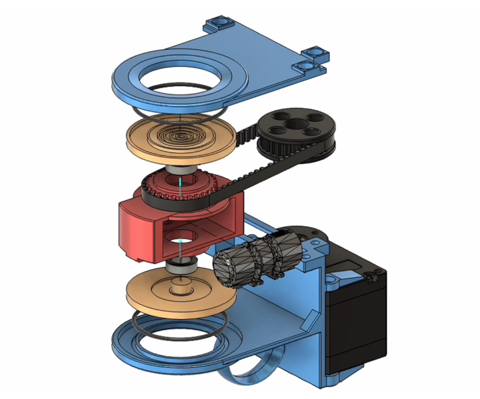

HapCompass: A Rotational Haptic Device for Contact-Rich Robotic Teleoperation
ICRA 2026
The contact-rich nature of manipulation makes it a significant challenge for robotic teleoperation. While haptic feedback is critical for contact-rich tasks, providing intuitive directional cues within wearable teleoperation interfaces remains a bottleneck. Existing solutions, such as non-directional vibrations from handheld controllers, provide limited information, while vibrotactile arrays are prone to perceptual interference. To address these limitations, we propose HapCompass, a novel, low-cost wearable haptic device that renders 2D directional cues by mechanically rotating a single linear resonant actuator (LRA). We evaluated HapCompass's ability to convey directional cues to human operators and showed that it increased the success rate, decreased the completion time and the maximum contact force for teleoperated manipulation tasks when compared to vision-only and non-directional feedback baselines. Furthermore, we conducted a preliminary imitation-learning evaluation, suggesting that the directional feedback provided by HapCompass enhances the quality of demonstration data and, in turn, the trained policy.